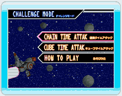
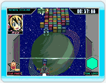
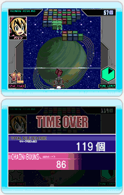
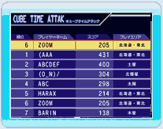

14 |
チャレンジモード |
 |
●チャレンジモードについて モードセレクト画面で「SINGLEPLAY-ひとりであそぶ」の「CHALLENGEMODE-チャレンジモード」を選ぶとチャレンジモードで遊ぶことができます。
チャレンジモードには「連鎖タイムアタック」と「キューブタイムアタック」の２つのゲームモードがあります。
また、Wi-Fiコネクションを使って自分の記録を全国ランキングに登録することもできます。
・CHAIN TIME ATTAK-連鎖タイムアタック どれだけ長い時間連鎖できるか挑戦するゲームです。 画面右下にある「タイムゲージ」はゲーム開始と同時に少しずつ減っていきますが、キューブを連鎖すると回復します。 タイムゲージがなくなるかキューブがボーダーラインをこえるとゲームオーバーとなります。
・CUBE TIME ATTAK-キューブタイムアタック 時間内にどれだけのキューブを消すことができるか挑戦するゲームです。 画面右下にある「タイムゲージ」はゲーム開始と同時に少しずつ減っていきます。
タイムゲージがなくなるかキューブがボーダーラインをこえるとゲームオーバーとなります。
連鎖をしてもタイムゲージは回復しませんが、連鎖時に消したキューブの個数がゲーム終了後に「連鎖ボーナス」として加算されます。
・ランキングについて ゲーム終了後にランキングに登録すると、Wi-Fiコネクションを通じて自分のゲームの得点などを全国ランキングに登録することができます。 登録したデータはWi-Fiコネクションやファンタジックキューブ公式サイトで公開されます。 全国ランキング１位を目指しましょう。 |
 |
 |
 |